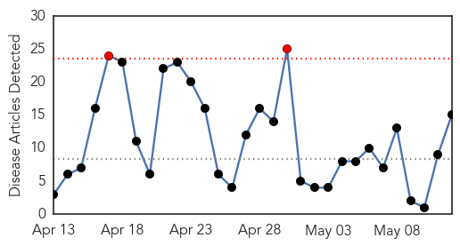
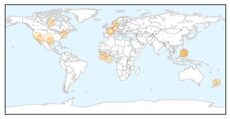
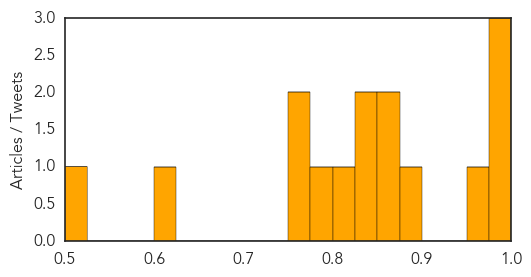

Measles
30-Day Web Trend
2 alerts, 0 warnings

30-Day Twitter Trend
0 alerts, 0 warnings

Article Locations
Article Confidences
Top Articles:
- 0.990
- News Scan for May 11, 2015
- 0.980
- Two Hamilton schoolkids diagnosed with measles
- 0.978
- Two measles cases confirmed in Hamilton « LiveNews.co.nz
- 0.951
- After Ebola, Measles: Several Liberian Kids Lack Treatment
- 0.876
- Measles cases in WV up - Philippines
- 0.859
- Philippines: Measles cases in WV up
- 0.853
- Measles may weaken immunity for more than two years
- 0.839
- Students in isolation from measles
- 0.832
- MMR Vaccines Strongly Recommended in Light of Recent Mumps and Measles Outbreaks
- 0.822
- To vaccinate or not to vaccinate? That is the question
- 0.792
- Measles vaccine cuts risk of other childhood diseases
- 0.756
- Vaccines & Viruses: California vaccine bill not immune to changes
- 0.756
- South Forsyth student didn't have measles after all
- 0.625
- More Nevadans Are Getting The Measles Vaccine
- 0.515
- Western Hemisphere Wipes Out Its Third Virus
Top Tweets:
-
No tweets found for May 12, 2015
MERS
30-Day Web Trend
0 alerts, 0 warnings

30-Day Twitter Trend
0 alerts, 0 warnings

Article Locations

Article Confidences

Top Articles:
Top Tweets:
-
No tweets found for May 12, 2015